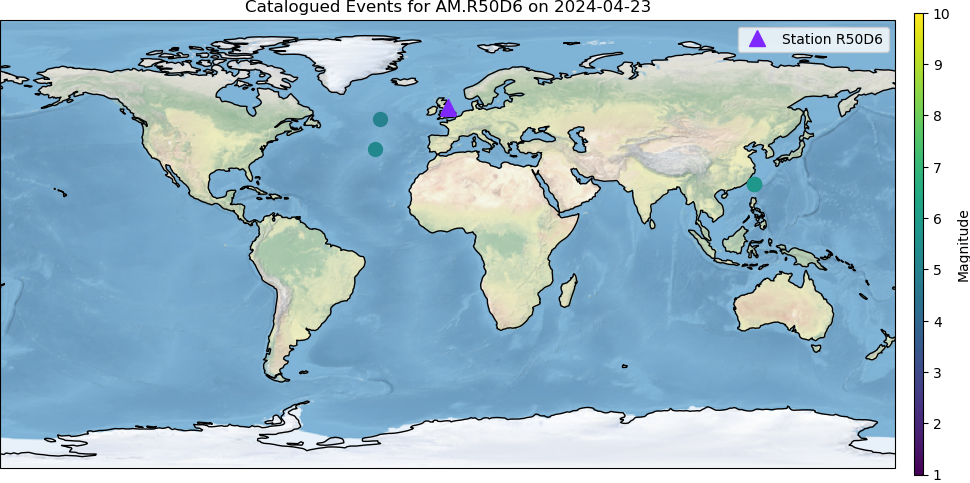

Station: AM.R50D6
Catalogue Provider: IRIS
Catalogued Events:
Detected Events From Catalogue:
Event ID: smi:service.iris.edu/fdsnws/event/1/query?eventid=11832031
Earthquake Time: 2024-04-23T13:05:39.336000
Location: Lat 50.0999, Long -28.9704
Magnitude: 5.0 mww
Depth: 9121.0 m
Distance to Station: 1921.27 km
Prediction confidence: P: 0.7034019827842712 S: None
Predicted P time: 2024-04-23T13:09:42.848903
Predicted S time: 2024-04-23T13:13:21.000711
Detected P time: 2024-04-23T13:09:48.950000
Detected S time: nan
Event ID: smi:service.iris.edu/fdsnws/event/1/query?eventid=11831877
Earthquake Time: 2024-04-23T02:20:59.691000
Location: Lat 23.8259, Long 121.6333
Magnitude: 5.2 Mwr
Depth: 10000.0 m
Distance to Station: 9764.02 km
Prediction confidence: P: 0.8594319820404053 S: None
Predicted P time: 2024-04-23T02:33:49.058574
Predicted S time: 2024-04-23T02:44:32.124338
Detected P time: 2024-04-23T02:33:40.040000
Detected S time: nan